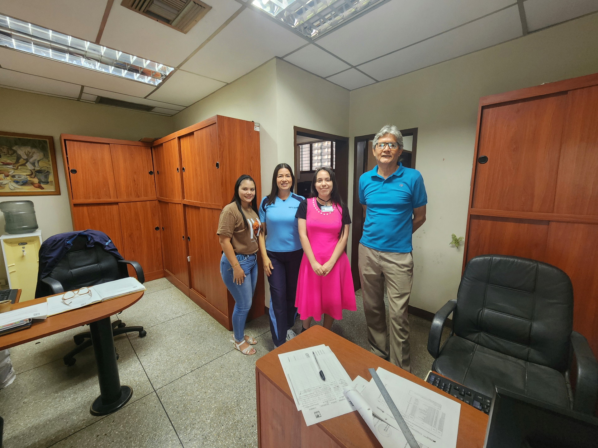

Mantenimiento Preventivo y Correctivo
Guía completa para el mantenimiento correctivo de software y preventivo de hardware dirigida al Vicerrectorado Académico de la UPTA.
Contenido del Manual
Software Correctivo
Procedimientos para identificar y corregir fallos en aplicaciones, sistemas operativos y errores de programación.
Ver más detallesHardware Preventivo
Guías para prevenir fallos en componentes físicos: limpieza, ventilación, firmware y revisión de conexiones.
Ver más detallesComunidad UPTA
Recursos diseñados específicamente para las necesidades del Vicerrectorado Académico de la UPTA.
Ver más detallesGuía Completa de Mantenimiento Correctivo de Software
Procedimientos Principales:
- Diagnóstico de errores del sistema operativo
- Actualización de controladores y parches de seguridad
- Limpieza de archivos temporales y registro
- Resolución de conflictos entre aplicaciones
- Escaneo antivirus y anti-malware
Herramientas Recomendadas:
- CCleaner para limpieza del sistema
- Malwarebytes para protección avanzada
- Driver Booster para actualización de drivers
- Windows Update / Apple Software Update
- Herramientas de diagnóstico del sistema
Guía Completa de Mantenimiento Preventivo de Hardware
Tareas de Mantenimiento:
- Limpieza interna y externa de componentes
- Revisión de ventilación y temperaturas
- Verificación de conexiones eléctricas
- Actualización de firmware/BIOS
- Inspección visual de componentes
Frecuencia Recomendada:
- Diario: Limpieza superficial
- Mensual: Verificación de ventiladores
- Trimestral: Limpieza interna profunda
- Anual: Revisión completa y pasta térmica
- Según uso: Calibración de periféricos
Recursos Específicos para la Comunidad UPTA
Destinatarios:
- Personal del Vicerrectorado Académico
- Docentes y personal administrativo
- Estudiantes de áreas técnicas
- Equipo de soporte TI de la UPTA
- Coordinadores de laboratorios
Recursos Disponibles:
- Manuales adaptados a equipos institucionales
- Horarios de soporte técnico especializado
- Plantillas de reporte de fallas
- Guías específicas por departamento
- Capacitaciones periódicas
Enciclopedia de Mantenimiento de Hardware
El mantenimiento preventivo no es solo limpieza; es asegurar la integridad de tus datos y la estabilidad del sistema. Interactúa con los esquemas 3D para identificar los puntos críticos de intervención.
Unidad Central de Procesamiento (CPU)
Es el núcleo lógico del computador. El calor es su principal enemigo: el material térmico entre el procesador y el disipador se cristaliza con el tiempo, perdiendo su capacidad de transferencia.
Protocolo: Limpie la superficie con alcohol isopropílico al 99%. Al reensamblar, aplique pasta térmica de plata o cerámica (no conductora) usando el método de la "gota central" para evitar burbujas de aire.
Placa Base (Cerebro Interconectado)
La PCB actúa como el sistema nervioso. El polvo acumulado en los puentes (Northbridge/Southbridge) y VRMs puede actuar como aislante térmico, causando reinicios inesperados.
- Limpieza: Use aire comprimido manteniendo el bote vertical para evitar expulsar líquido propelente.
- Inspección: Verifique que no existan condensadores "hinchados" o corrosión por humedad en las pistas de cobre.
Memoria RAM (DDR4/DDR5)
La memoria volátil maneja los datos en tiempo real. Los "pantallazos azules" (BSOD) suelen deberse a fallos de contacto en los bancos de memoria.
Mantenimiento: Desmonte los módulos y limpie los contactos dorados. Si usa un borrador, asegúrese de que sea libre de grasa y retire todos los residuos. Evite tocar los chips de memoria para no transferir aceites naturales de la piel.
Enfriamiento Activo (Fan & Heatsink)
Los ventiladores mueven grandes volúmenes de aire, atrapando micropartículas en las aspas y el radiador. Un ventilador obstruido reduce la eficiencia térmica hasta en un 60%.
Técnica: Bloquee las aspas con un dedo al usar aire comprimido; si el ventilador gira a revoluciones excesivas por el aire, puede generar voltaje inducido y dañar el puerto de la placa base.
Fuente de Alimentación (PSU)
Convierte AC a DC. Es el componente más peligroso debido a sus capacitores electrolíticos que almacenan energía de alta tensión incluso días después de desconectada.
Almacenamiento (SSD / NVMe)
A diferencia de los discos mecánicos, los SSD no tienen partes móviles pero sufren degradación por calor (throttling de escritura). El mantenimiento es preventivo a nivel de conectores.
Acción: Verifique que los disipadores térmicos de las unidades M.2 tengan el thermal pad en buen estado y bien posicionado sobre el controlador.
Manual de Procedimientos
Guías detalladas para identificar problemas, aplicar soluciones y prevenir fallos futuros en equipos informáticos.
1. Identificar Problemas Comunes
Reconocimiento y diagnóstico de fallas recurrentes en hardware y software
Problemas de Hardware Comunes
Sobrecalentamiento
- Ventiladores ruidosos o detenidos
- Apagados inesperados del sistema
- Rendimiento reducido (thermal throttling)
- Reinicios automáticos frecuentes
Fallos de Almacenamiento
- Sonidos de clic en discos duros
- Tiempos de carga excesivos
- Archivos corruptos o inaccesibles
- Errores SMART en diagnóstico
Problemas de Memoria
- Pantallas azules (BSOD) frecuentes
- Aplicaciones que se cierran inesperadamente
- Rendimiento lento con múltiples programas
- Errores de memoria en diagnósticos
Problemas de Software Comunes
Rendimiento del Sistema
- Tiempo de inicio excesivo (>2 minutos)
- Alto uso de CPU en reposo (>30%)
- Consumo excesivo de memoria RAM
- Congelamientos frecuentes del sistema
Errores de Aplicaciones
- Aplicaciones que no inician
- Errores de compatibilidad
- Fallas al instalar actualizaciones
- Conflictos entre programas
Problemas de Seguridad
- Antivirus desactualizado o inactivo
- Comportamiento sospechoso del sistema
- Pop-ups no deseados constantes
- Acceso no autorizado a archivos
Herramientas de Diagnóstico Recomendadas
- CrystalDiskInfo: Monitoreo de salud de discos duros
- HWMonitor: Temperaturas y voltajes del sistema
- MemTest86: Pruebas exhaustivas de memoria RAM
- SpeedFan: Control de ventiladores y temperaturas
- Process Explorer: Análisis detallado de procesos
- CCleaner: Limpieza y optimización del sistema
- Malwarebytes: Detección de malware avanzado
- Windows Event Viewer: Registros del sistema
2. Soluciones Paso a Paso
Procedimientos detallados para resolver problemas comunes de hardware y software
Soluciones de Hardware
Limpieza de Componentes Internos
Herramientas necesarias: Aire comprimido, brochas suaves, alcohol isopropílico, paños de microfibra.
- Desconectar el equipo de la corriente eléctrica
- Abrir la carcasa siguiendo las instrucciones del fabricante
- Usar aire comprimido para remover polvo de ventiladores y heatsinks
- Limpiar contactos de memoria y tarjetas de expansión
- Verificar que todos los cables estén bien conectados
Reemplazo de Pasta Térmica
Frecuencia: Cada 2-3 años o cuando las temperaturas sean altas.
- Retirar cuidadosamente el disipador del procesador
- Limpiar la pasta térmica vieja con alcohol isopropílico
- Aplicar una pequeña cantidad de pasta nueva en el centro del procesador
- Volver a colocar el disipador con presión uniforme
- Verificar temperaturas después del procedimiento
Soluciones de Software
Optimización de Inicio del Sistema
Tiempo estimado: 10-15 minutos.
- Presionar Ctrl + Shift + Esc para abrir el Administrador de tareas
- Ir a la pestaña "Inicio"
- Deshabilitar programas no esenciales que inicien con Windows
- Verificar servicios innecesarios en services.msc
- Reiniciar el equipo para aplicar cambios
Limpieza y Desfragmentación de Disco
Frecuencia: Mensual para HDD, no necesario para SSD.
- Ejecutar "Limpiar disco" desde Propiedades del disco
- Usar CCleaner para limpieza de registro y archivos temporales
- Ejecutar desfragmentador de disco (solo para HDD)
- Verificar espacio libre disponible (>15% del total)
- Configurar tareas programadas para mantenimiento regular
Consejos Importantes
- Siempre crear respaldo de datos importantes antes de realizar cualquier procedimiento
- Documentar cada paso realizado para futuras referencias
- Probar soluciones en orden de complejidad (de lo simple a lo complejo)
- Si no estás seguro, consultar con personal técnico especializado
3. Prevenir Fallos Futuros
Estrategias y buenas prácticas para mantener equipos en óptimas condiciones
Calendario de Mantenimiento
Diario
- Software Verificar actualizaciones del sistema
- Hardware Limpieza superficial con paño seco
- Seguridad Revisar estado del antivirus
Semanal
- Software Limpieza de archivos temporales
- Hardware Verificar temperaturas del sistema
- Backup Respaldos incrementales de datos
Mensual
- Software Desfragmentación de discos HDD
- Hardware Limpieza de ventiladores externos
- Seguridad Escaneo completo del sistema
Anual
- Hardware Limpieza interna completa
- Hardware Revisión y cambio de pasta térmica
- General Auditoría completa del equipo
Mejores Prácticas de Mantenimiento
Ambiente de Trabajo
- Temperatura controlada: Mantener entre 18°C y 24°C
- Humedad adecuada: Entre 40% y 60% de humedad relativa
- Ventilación adecuada: 15-20 cm de espacio libre alrededor del equipo
- Protección eléctrica: Usar reguladores de voltaje o UPS
Cuidado de Componentes
- Discos duros: Evitar movimientos bruscos durante operación
- Pantallas: Usar protectores de pantalla y limpiar con productos específicos
- Teclados: Limpieza regular con aire comprimido
- Baterías: Evitar ciclos de carga completos en equipos portátiles
Seguridad Informática
- Actualizaciones: Mantener sistema operativo y aplicaciones actualizadas
- Antivirus: Software activo y con definiciones actualizadas
- Firewall: Habilitado y configurado correctamente
- Backups: Estrategia 3-2-1 (3 copias, 2 medios diferentes, 1 fuera del sitio)
Comunidad UPTA

Destinatarios y Contexto
Este manual está diseñado específicamente para la comunidad del Vicerrectorado Académico de la UPTA, teniendo en cuenta sus necesidades particulares, recursos disponibles y nivel técnico.
Características
- Usuarios con distintos niveles técnicos.
- Equipos heterogéneos.
- Necesidad de productividad.
- Seguridad crítica.
Beneficios
- Reducción de inactividad.
- Prolongación de vida útil.
- Mejora en seguridad.
- Empoderamiento de usuarios.
Recursos Adicionales
Documentación PDF
Guías descargables para consulta offline.
Ver recursos disponiblesFAQ
Preguntas frecuentes y soluciones rápidas para problemas comunes.
Ver preguntas frecuentesDocumentación PDF
FAQ: Mantenimiento Preventivo
Respuestas rápidas sobre los procedimientos de limpieza y cuidado de equipos CPU.
Componentes del Sistema
Hardware
Componentes Físicos
- CPU Pentium(R) Dual-Core
- RAM 3 GB
- SSD 120 GB
- Fuentes de alimentación OEM
- Periféricos Mouse y Teclado
Software
Componentes Lógicos
- Sistemas operativos Windows 10
- Productividad Microsoft Office
- Navegadores web Google Chrome y Microsoft Edge
- Seguridad Windows Defender y Firewall
- Controladores Actualizados
Equipo Desarrollador
Ana Borges
C.I: 32.318.303
Estudiante con experiencia en desarrollo web y administración de sistemas, siendo la creadora de este manual técnico interactivo para proporcionar una guía completa y accesible para la comunidad del Vicerrectorado Académico.
Habilidades Técnicas
- Desarrollo Web (HTML/CSS/JS)
- Administración de Sistemas
- Ciberseguridad / Soporte